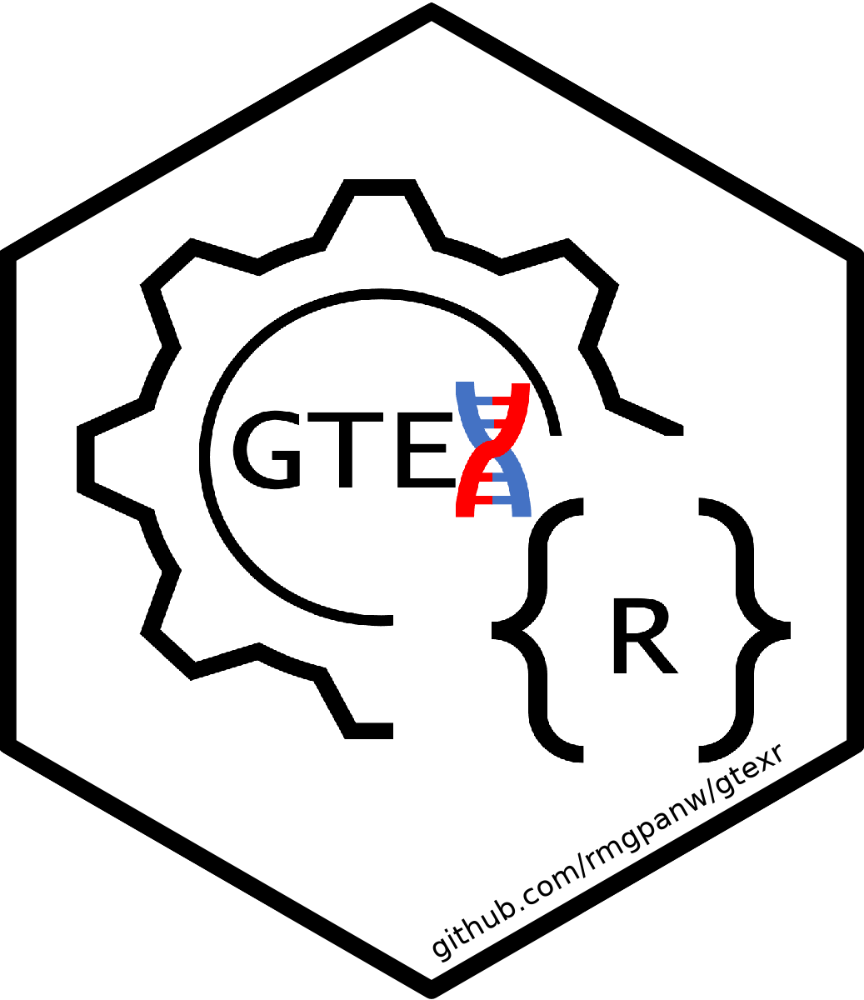

Get Full Get Collapsed Gene Model Exon
Source:R/get_full_get_collapsed_gene_model_exon.R
get_full_get_collapsed_gene_model_exon.RdThis service allows the user to query the full Collapsed Gene Model Exon of a specific gene by gencode ID
Arguments
- gencodeId
String. A Versioned GENCODE ID of a gene, e.g. "ENSG00000065613.9".
- datasetId
String. Unique identifier of a dataset. Usually includes a data source and data release. Options: "gtex_v8", "gtex_snrnaseq_pilot".
- page
Integer (default = 0).
- itemsPerPage
Integer (default = 250). Set globally to maximum value 100000 with
options(list(gtexr.itemsPerPage = 100000)).- .verbose
Logical. If
TRUE(default), print paging information. Set toFALSEglobally withoptions(list(gtexr.verbose = FALSE)).- .return_raw
Logical. If
TRUE, return the raw API JSON response. Default =FALSE
See also
Other Datasets Endpoints:
get_annotation(),
get_collapsed_gene_model_exon(),
get_downloads_page_data(),
get_file_list(),
get_functional_annotation(),
get_linkage_disequilibrium_by_variant_data(),
get_linkage_disequilibrium_data(),
get_sample_datasets(),
get_subject(),
get_tissue_site_detail(),
get_variant(),
get_variant_by_location()
Examples
get_full_get_collapsed_gene_model_exon(gencodeId = "ENSG00000203782.5")
#>
#> ── Paging info ─────────────────────────────────────────────────────────────────
#> • numberOfPages = 1
#> • page = 0
#> • maxItemsPerPage = 250
#> • totalNumberOfItems = 2
#> # A tibble: 2 × 14
#> featureType end genomeBuild chromosome exonNumber geneSymbolUpper exonId
#> <chr> <int> <chr> <chr> <chr> <chr> <chr>
#> 1 exon 153259733 GRCh38/hg38 chr1 1 LOR ENSG0…
#> 2 exon 153262122 GRCh38/hg38 chr1 2 LOR ENSG0…
#> # ℹ 7 more variables: datasetId <chr>, start <int>, dataSource <chr>,
#> # gencodeId <chr>, geneSymbol <chr>, gencodeVersion <chr>, strand <chr>